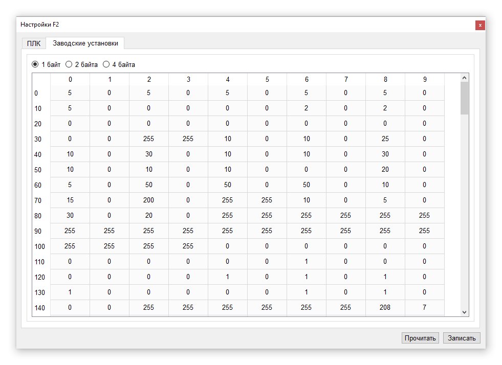

Окно настроек контроллера разбито на две вкладки. В одной задаются параметры сетевых интерфейсов, тип контроллера и ряд вспомогательных параметров, влияющих на работу контроллера. В другой представлена таблица заводских установок контроллера.
Контроллеры допускают работу в сети по интерфейсу RS485. Поддерживаются протоколы Modbus RTU/ASCII (список поддерживаемых команд можно посмотреть в описании языка программирования Релкон) и RKBIN/RKASCII. Для идентификации контроллера в сети используется сетевой адрес в диапазоне от 1 до 255. Независимо от реального адреса любой контроллер должен отвечать на запросы, обращённые к нулевому сетевому адресу.
В настройках задаются 2 адреса - адрес при программировании и сетевой адрес контроллера. Адрес при программировании - это адрес по которому будет выполняться поиск контроллера при попытке загрузить программу, а сетевой адрес - это адрес, который будет установлен в контроллере после завершения процесса программирования.
Каналы PC и PROG контроллера допускают настройку скорости и выбор протокола. Канал PU служит для подключения пульта. Однако, при необходимости он может использоваться как интерфейсный аналогично каналам PC и PROG. Для этого в настройках необходимо снять флаг "использовать пульт". В отличие от каналов PC и PROG канал PU может работать только на скорости 115200 бит/с и не поддерживает ASCII вариант протоколов. Кроме этого пультовой канал имеет более низкий приоритет и поэтому запросы там могут обратываться немного медленне чем на каналах PC и PU.
Канал MB для подключения модулей MATCHBOX аналогично пультовому тоже может выполнять 2 функции - при наличии модулей расширения входов/выходов (если в программе контроллера имеются ссылки на модули ввода/вывода) он используется для коммуникации с ними, в противном случае - он работает по протоколам Modbus RTU/RKBIN на скорости 115200 бит/с.
Для контроллеров, поддерживающих работу с Ethernet сетью задаются IP и MAC адрес, шлюз и маска сети. Для контроллеров без Ethernet интерфейса рекомендуется устанавливать сетевой адрес 0.0.0.0.
Режим эмуляции упрощает отладку программы. В режиме "эмуляции входов" физическое состояние сигналов на дискретных и аналоговых входах не оказывает на них влияния. Благодаря этому в отладчике можно выставлять необходимые значения входов, проверяя реакцию программы. Режим полной эмуляции кроме входов влияет также и на поведение выходов. Включение какого-либо выхода программой не приведёт к физическому срабатыванию соответствующего выхода контроллера."Modbus Master эмуляция" запрещает реальный опрос Modbus переменных (если они были созданы) по интерфейсу RS485. Однако в отладчике они остаются и с ними также можно работать.
Описание контроллера позволяет сохранить в энергонезависимой памяти контроллера текстовую строку длиной от 32 до 64 байт (в зависимости от содержимого строки).
Тип контроллера влияет на версию операционной системы, загружаемой в контроллер. Отличия могут быть связаны с аппаратными особенностями ПЛК. Поэтому в настройках необходимо указывать тип, соответствующий реально используемому контроллеру.
Заводские установки - область энергонезависимой памяти ПЛК размером 1024 байта, к которой возможен доступ в программе через системные переменные (EE - более подробно работа с ними изложена в справке по языку Релкон). Обычно эти переменные применяются для настройки режимов программы контроллера. В таблице установок предусмотрено их отображение в виде однобайтных, двухбайтных или четырёхбайтных переменных. Каждую ячейку таблицы можно менять. Для применения сделанных изменений необходимо нажать кнопку "записать".
